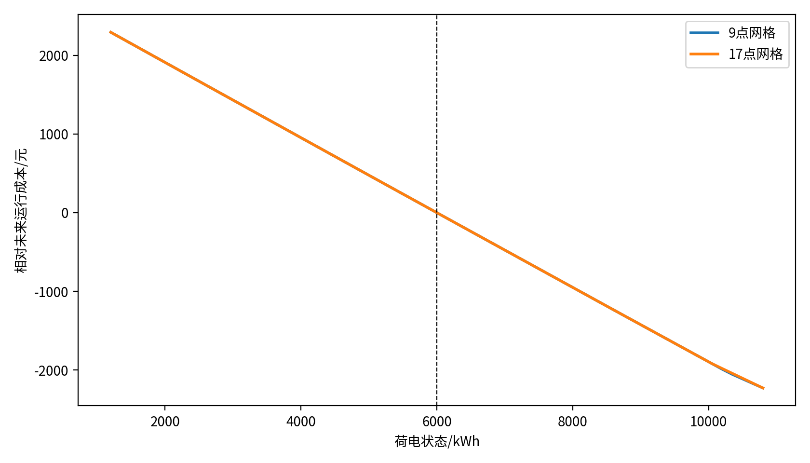
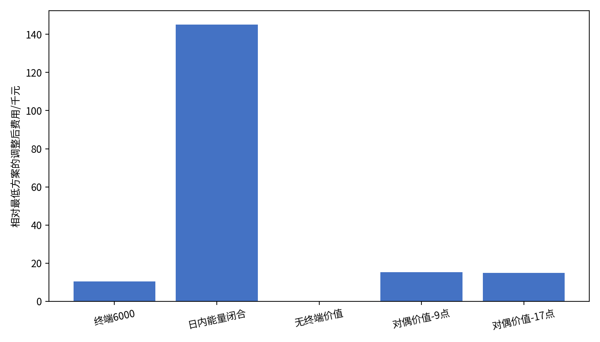
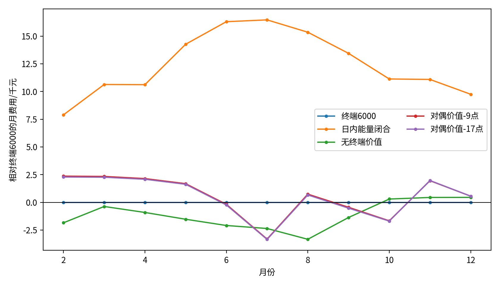
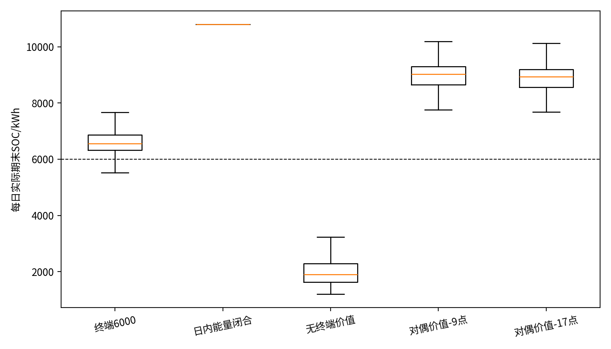

问题二：基于对偶库存价值的因果滚动两阶段 SAA 储能调度模型
1 问题分析与建模主线
问题二的核心并不是单纯追求负荷或光伏预测误差最小，而是在预测不确定性下决定“何时购电、购多少电、何时充放电”，使计划购电费与事后紧急购电费之和尽可能低。其困难来自三层耦合：第一，负荷与光伏共同决定净负荷，二者预测误差会在同一时槽叠加；第二，储能把 144 个时槽连接成一个整体，当前放电会降低后续可用电量；第三，只优化一天而不评价日末库存，会产生人为放空或人为回充的边界效应。
据此，本文将“预测—规划—执行—评价”构造成一条因果闭环：
该结构中的日前优化仍是线性规划：目标函数、场景功率平衡、SOC 递推、功率边界、容量边界以及终端价值的支持切平面均为线性。因此，HiGHS 求得的是给定有限经验场景下的全局最优解；本文不将这一结论外推为未知真实概率分布下的全局最优。
1.1 建模假设
- 每日 0:00 前，次日分时电价已知；真实负荷与光伏仅在对应时槽执行时可得。
- 负荷和光伏预测、残差池、模型参数与终端价值函数均只使用决策时刻以前已经结束的日期，不使用附件 3 的未来光伏信息或外部天气。
- 计划购电量没有额外上限；充、放电母线侧功率均不超过 5000 kW，SOC 运行区间为电池标称容量的 10%—90%。
- 紧急购电可弥补实际执行中的剩余缺口，其价格为对应实时电价的 5 倍；多余电量允许弃电。
- 1 月作为历史预热期，2 月 1 日实际初始 SOC 取 6000 kWh。此后实际 SOC 跨日连续，不设置每日末端硬等式。
2 数据、时间口径与信息集
2.1 统一单位与符号
原始负荷、光伏与净负荷的单位为 kW；每个时槽长度为
\[ \Delta t=\frac{10}{60}=\frac16\ \mathrm{h}. \tag{1} \]因此，进入功率平衡约束的净用电量为 \(N_{d,t}\Delta t\)，单位为 kWh。所有购电、充电、放电、紧急购电和弃电决策均使用 kWh，SOC 也使用 kWh，电价单位为元/kWh。这一转换保证目标函数每一项均为“元”。
| 符号 | 含义 | 单位/范围 |
|---|---|---|
| \(d,t,s\) | 日期、日内时槽、历史残差场景编号 | \(t=1,\ldots,144\) |
| \(L_{d,t},P_{d,t},N_{d,t}\) | 实际负荷、实际光伏、实际净负荷，\(N=L-P\) | kW |
| \(\widehat L_{d,t},\widehat P_{d,t},\widehat N_{d,t}\) | 负荷、光伏与净负荷预测 | kW |
| \(p_t\) | 时槽购电价格 | 元/kWh |
| \(q_t\) | 日前计划购电量 | kWh，\(q_t\ge0\) |
| \(c_t,v_t\) | 参考充电量与参考放电量 | kWh |
| \(E_t\) | 时槽 \(t\) 结束时的参考 SOC | kWh |
| \(z_{s,t}\) | 场景 \(s\) 下的紧急购电补救量 | kWh，\(z_{s,t}\ge0\) |
| \(\theta\) | 规划期末 SOC 对未来运行成本的近似值 | 元 |
| \(\eta_c,\eta_d\) | 充电效率、放电效率 | 均为 0.9 |
2.2 数据清洗与因果边界
数据读取阶段逐项检查：全年日期必须从 2025 年 1 月 1 日连续至 12 月 31 日；每日必须恰有 144 个时槽；负荷、光伏、电价不得出现缺失值、非有限值或负值；时间标签统一解释为右端标签，例如 00:10 对应 00:00—00:10。预测比较采用 1—2 月训练、3 月选参、4—12 月原生预测的滚动划分；2—3 月 59 天统一用 lag-7 冷启动，避免以当日真实值填补预测。
2.3 周期性证据
全年日总净负荷的 lag-1 相关系数为 0.4699，而 lag-7 自相关达到 0.9730；对齐 144 点日曲线后，净负荷 lag-1 与 lag-7 的相关系数分别为 0.8806 和 0.9809，lag-14、lag-21、lag-28 的曲线相关仍为 0.9731、0.9648、0.9562。由此可见，七日周期是最强的短期结构，模型特征与残差窗口均应以完整周为基本尺度。
3 负荷—光伏分解预测与模型选择
3.1 为什么分别预测负荷与光伏
负荷受居民活动和星期周期影响，光伏受日照与季节影响，二者的生成机制不同。因此本文分别建立预测器，再形成净负荷：
\[ \widehat N_{d,t}=\widehat L_{d,t}-\widehat P_{d,t}. \tag{2} \]代码在原生预测期先将负荷与光伏预测截断为非负数，故式（2）与 \(\max(\widehat L,0)-\max(\widehat P,0)\) 等价。
3.2 Ridge 的因果特征与估计式
对任一目标序列 \(y\in\{L,P\}\)，日期 \(d\)、时槽 \(t\) 的特征向量 \(\boldsymbol x_{d,t}\) 只由 \(d\) 日以前数据构成，包括：
- 同一时槽的 lag-1、2、3、7、14、21、28 值；
- 过去 3、7、14、28 日同一时槽的均值与标准差；
- 最近四个同星期日同一时槽的均值；
- 星期 7 维 one-hot；年内日期的一阶正余弦；时槽的 1—3 阶傅里叶正余弦。
先在训练集上标准化特征，再求解 Ridge 回归：
\[ \widehat{\boldsymbol\beta}_{y} =\arg\min_{\boldsymbol\beta} \left\{ \sum_{(d,t)\in\mathcal T} \bigl(y_{d,t}-\beta_0-\boldsymbol x_{d,t}^{\mathsf T}\boldsymbol\beta\bigr)^2 +\lambda_y\lVert\boldsymbol\beta\rVert_2^2 \right\}. \tag{3} \]正则项抑制多个滞后和滚动统计之间的共线性。候选值为 \(\{0.1,1,10,100\}\)，仅用 3 月验证 MAE 选择：负荷取 \(\lambda_L=100\)，验证 MAE 为 156.4659 kW；光伏取 \(\lambda_P=10\)，验证 MAE 为 180.0741 kW。4 月起每月首日仅使用此前全部数据重新训练。
3.3 为什么最终选择 Ridge
预测器不是按单一误差指标决定，而是在完全相同的后续规划器上比较端到端经济结果。4—12 月公平预测期中，Manual Weekly 的净负荷 MAE、RMSE 分别为 280.1658、399.1767 kW，Ridge 分别为 288.8770、408.3419 kW；Ridge 的点预测误差略高。然而在 5—12 月 245 日公平成本期中，Manual Weekly 的总费用为 11,054,372.74 元，Ridge 为 10,892,123.43 元，降低 162,249.30 元，即 1.4677%；紧急购电费由 804,644.71 元降至 726,724.20 元，紧急购电量由 212,089.69 kWh 降至 191,703.13 kWh。
7 日移动块 Bootstrap 显示，Ridge 相对 Manual Weekly 的日成本改善均值为 731.90 元，95% 区间为 [383.21, 1198.77] 元；而日 MAE 改善区间为 [−28.19, 27.70] kW，跨过 0。该结果直接说明：预测误差最低不必然对应调度成本最低，预测模型必须按其对下游决策的作用评价。故最终固定 Ridge 作为预测中心。
4 完整日残差场景构造与统计参数确定
4.1 场景构造
定义历史日期 \(i\) 的净负荷预测残差为
\[ \varepsilon_{i,t}=N_{i,t}-\widehat N_{i,t}. \tag{4} \]对待规划日期 \(d\)，将同一历史日的整条 144 点残差曲线平移到当日预测中心，得到场景
\[ N^{(i)}_{d,t}=\widehat N_{d,t}+\varepsilon_{i,t}, \qquad i\in\mathcal I_d. \tag{5} \]这种“完整日重采样”保留了残差在日内各时槽之间的同步结构，例如云层变化导致的连续光伏偏差；若逐时独立抽样，则会破坏这种物理相关性。
4.2 指数时间权重
较近残差对当前误差分布通常更有代表性。设历史日龄为 \(a_i=d-i\)，半衰期为 \(h\)，则场景权重定义为
\[ w_i=\frac{2^{-a_i/h}}{\displaystyle\sum_{j\in\mathcal I_d}2^{-a_j/h}}, \qquad \sum_{i\in\mathcal I_d}w_i=1. \tag{6} \]半衰期的含义清晰：相差 \(h\) 天的样本，其未归一化权重恰好减半。2—5 月使用 21 日窗口、14 日半衰期作为预热配置；6 月 1 日依据 42 日搜索、14 日独立验证和 1 日隔离的滚动流程，将配置更新为 14 日窗口、7 日半衰期。该候选在验证期的日节省均值为 467.04 元，7 日块 Bootstrap 95% 区间为 [398.10, 535.99] 元，因下界大于 0 而接受；7—10 月提出的条件相似日、不同执行储备比例或不衰减权重均未通过同一门槛，因此最终保持 14 日/7 日且不混合条件相似日。
| 参数 | 最终取值 | 来源与解释 |
|---|---|---|
| 日内时槽数 \(T\) | 144 | 题目数据每 10 min 一个时槽 |
| \(\Delta t\) | 1/6 h | 10 min 到小时的单位换算 |
| 场景窗口 \(W\) | 2—5 月 21 日；6—12 月 14 日 | 分别为 3 周和 2 周；6 月历史验证接受后冻结 |
| 场景半衰期 \(h\) | 2—5 月 14 日；6—12 月 7 日 | 由式（6）解释，6 月历史验证接受 |
| 执行储备比例 \(\rho\) | 0.5 | 验证流程未支持替换，故保留中性参考跟随强度 |
| 紧急购电倍数 | 5 | 题目给定经济参数 |
5 两阶段 SAA 线性规划模型
5.1 决策时序
第一阶段在实际净负荷揭示前统一确定 \(q_t,c_t,v_t,E_t\)；第二阶段仅让紧急购电 \(z_{s,t}\) 随场景变化。终端价值辅助变量 \(\theta\) 由所有支持切平面共同约束。于是模型体现“计划先做、缺口后补”的两阶段逻辑。
5.2 目标函数
对日期 \(d\) 的经验场景集 \(\mathcal I_d\)，最终日前问题为
\[ \min\quad \underbrace{\sum_{t=1}^{T}p_tq_t}_{\text{计划购电费}} +\underbrace{\sum_{i\in\mathcal I_d}w_i\sum_{t=1}^{T}5p_tz_{i,t}}_{\text{期望紧急购电费}} +\underbrace{\theta}_{\text{终端库存价值}} +\underbrace{\epsilon\sum_{t=1}^{T}(c_t+v_t)}_{\text{数值消环项}}, \qquad \epsilon=10^{-8}. \tag{7} \]其中 \(\epsilon\) 仅用于在等价最优解中抑制同时充放电，不代表额外业务偏好；最终报告的物理费用不含该项。
5.3 场景电量平衡
对每个场景和时槽，计划购电、放电与紧急购电必须覆盖净用电量和充电需求：
\[ q_t+v_t-c_t+z_{i,t}\ge N^{(i)}_{d,t}\Delta t, \qquad \forall i\in\mathcal I_d,\ t=1,\ldots,T. \tag{8} \]规划模型使用不等式，因而在光伏富余场景中允许隐式弃电；真实回放时再显式记录弃电量并用等式校验母线平衡。
5.4 SOC 递推
令 \(E_0\) 为当天实际起始 SOC，则
\[ E_t=E_{t-1}+\eta_c c_t-\frac{v_t}{\eta_d}, \qquad \eta_c=\eta_d=0.9. \tag{9} \]充入母线侧 \(c_t\) kWh 后只有 \(\eta_c c_t\) 进入电池；从母线放出 \(v_t\) kWh 则需消耗 \(v_t/\eta_d\) kWh 库存，因此效率位置不能互换。
5.5 容量、功率与非负约束
\[ 1200\le E_t\le10800, \qquad 0\le c_t,v_t\le5000\Delta t=833.3333, \tag{10} \] \[ q_t\ge0,\qquad z_{i,t}\ge0. \tag{11} \]标称电池容量为 12000 kWh，运行区间为 10%—90%；5000 kW 功率上限乘以 1/6 h 后得到每时槽最大充、放电量。最终模型不添加 \(E_T=6000\) 或 \(E_T=E_0\) 的硬等式，规划窗口的闭合由下一节的库存价值承担。
5.6 线性与全局最优性
式（7）对所有变量线性，式（8）—（11）均为线性等式、不等式或区间约束；分段线性终端价值可通过辅助变量和若干线性切平面表示。因此可行域为凸多面体，目标函数为线性函数。只要问题可行且有界，线性规划基本定理保证求得有限经验场景问题的全局最优解，不需要用遗传算法、粒子群或人为非线性化来近似搜索。
6 由 LP 对偶变量学习终端库存价值
6.1 硬终端等式的偏差
若每天强制 \(E_T=6000\)，模型会把 6000 kWh 当成无条件正确的日末库存；若完全取消末端项，有限窗口又会把日末剩余电量视为没有价值，从而倾向于放空。更合理的处理是把日末 SOC 对未来运行的影响转化为数据驱动的价值函数 \(V_u(E_T)\)，其中 \(u\) 表示下一日星期。
6.2 相对价值递推
对每月月初的历史信息和星期 \(u\in\{0,\ldots,6\}\)，从过去 84 天窗口中剔除紧邻决策点的 1 天，并筛选同星期完整日；样本按 28 日半衰期加权。设下一星期的近似价值为 \(\widehat V_{u+1}\)，则给定初始 SOC \(e\) 的参数化 LP 最优值为
\[ Q_u(e)=\min_{x\in\mathcal X(e)} \left\{ \mathbb E_{\widehat{\mathbb P}_u}[C_u(x,N)] +\widehat V_{u+1}(E_T) \right\}. \tag{12} \]相对价值只在差值意义下决定策略，因此以 6000 kWh 作为加法归一化参考：
\[ \widehat V_u(e)=Q_u(e)-Q_u(6000). \tag{13} \]6.3 对偶变量如何产生支持切平面
在式（9）的首个 SOC 方程中，初始能量 \(e\) 作为右端项进入线性规划。在线性规划最优值函数关于右端参数为凸分段线性函数。令 \(e_j\) 为 SOC 网格点，\(Q_u(e_j)\) 为该点的最优目标值，\(\pi_j\) 为对应初始 SOC 等式的对偶边际，则 \(\pi_j\in\partial Q_u(e_j)\)，从而对任意可行 \(e\) 有次梯度不等式
\[ Q_u(e)\ge Q_u(e_j)+\pi_j(e-e_j). \tag{14} \]于是每个网格点给出一条真实的全局下支持线
\[ \ell_j(e)=Q_u(e_j)+\pi_j(e-e_j) =\pi_j e+\bigl[Q_u(e_j)-\pi_j e_j\bigr]. \tag{15} \]取所有支持线的上包络，并按 6000 kWh 平移归一化：
\[ \widehat V_u(e)= \max_j\ell_j(e)-\max_j\ell_j(6000). \tag{16} \]最终使用 17 个等距网格点覆盖 ([1200,10800]) kWh，间距为 600 kWh；9 点网格间距为 1200 kWh，仅用于收敛消融。价值迭代的停止容差为 (10^{-6}) 元，最多 50 次仅作为数值保护。两种网格、11 个月份和 7 个星期组合均实际收敛。
6.4 把价值函数放回日前 LP
若下一日星期为 \(u^+\)，将式（16）的切平面写成 \(\ell_j(E)=a_jE+b_j\)，引入变量 \(\theta\) 并加入
\[ \theta\ge a_jE_T+b_j,\qquad \forall j. \tag{17} \]由于目标函数最小化 \(\theta\)，最优时必有 \(\theta=\max_j(a_jE_T+b_j)=\widehat V_{u^+}(E_T)\)。这就用纯线性约束把跨日未来价值嵌入单日 SAA，而没有人为指定日末 SOC。

7 H1 逐时因果执行机制
日前 SAA 给出计划购电 \(q_t\) 和参考 SOC 路径 \(E_t^{\rm ref}\)。实际执行时，不直接照搬在不确定场景下得到的参考充放电量，而在每个时槽观察当期实际净用电 \(n_t^{\rm act}=N_{d,t}\Delta t\)，仅依靠当前状态作出动作。
7.1 购电富余时
定义母线余量 \(r_t=q_t-n_t^{\rm act}\)。若 \(r_t\ge0\)，优先充电：
\[ c_t^{\rm act}=\min\left\{r_t,\ 833.3333,\ \frac{10800-E_{t-1}^{\rm act}}{\eta_c}\right\}, \tag{18} \] \[ v_t^{\rm act}=z_t^{\rm act}=0, \qquad s_t^{\rm act}=r_t-c_t^{\rm act}, \tag{19} \]其中 \(s_t^{\rm act}\) 为弃电量。
7.2 购电不足时
若 \(r_t<0\)，先依据参考路径设置动态储备线
\[ R_t=1200+\rho\bigl(E_t^{\rm ref}-1200\bigr), \qquad \rho=0.5, \tag{20} \]再在不跌破该储备线的前提下放电：
\[ v_t^{\rm act}=\min\left\{-r_t,\ 833.3333,\ \eta_d\max(E_{t-1}^{\rm act}-R_t,0)\right\}, \tag{21} \] \[ z_t^{\rm act}=-r_t-v_t^{\rm act}, \qquad c_t^{\rm act}=s_t^{\rm act}=0. \tag{22} \]实际 SOC 按
\[ E_t^{\rm act}=E_{t-1}^{\rm act}+\eta_c c_t^{\rm act}-\frac{v_t^{\rm act}}{\eta_d} \tag{23} \]递推，并将当日最后一个 SOC 原样传给次日。实际母线等式为 \(q_t+z_t^{\rm act}+v_t^{\rm act}-c_t^{\rm act}-s_t^{\rm act}=n_t^{\rm act}\)。 式（18）—（23）只访问当前时槽实际值，不访问未来真实负荷或光伏，因此执行回放不存在信息泄漏。
8 评价口径、双边库存修正与模型检验
8.1 原始实付费用
对评价区间 ([a,b])，原始实付费用为
\[ C^{\rm raw}_{[a,b]} =\sum_{d=a}^{b}\sum_{t=1}^{T} \left(p_tq_{d,t}+5p_tz^{\rm act}_{d,t}\right). \tag{24} \]该费用对应真实账单，但若两个策略在区间起点或终点保有不同电量，直接比较会把库存转移误当成节省。
8.2 双边库存价值修正
为同时修正评价区间的起点与终点，所有策略统一使用 17 点价值函数：
\[ C^{\rm adj}_{[a,b]} =C^{\rm raw}_{[a,b]} +V_{b+1}\!\left(E_b^{\rm act}\right) -V_a\!\left(E_{a-1}^{\rm act}\right). \tag{25} \]该式可以由“现金费用 + 期末资产价值变化”推得：若期末 SOC 更高，未来成本价值 \(V\) 通常更低，因而相应减少调整后费用；若策略通过耗尽电池降低当期账单，则较高的期末未来成本会被加回。采用双边而非单边修正，保证对 6—10 月、11—12 月等分段评价时，起始库存差异也得到公平处理。
8.3 约束与数值验收
| 检验 | 最大误差 | 容差 | 结论 |
|---|---|---|---|
| 历史信息因果性 | 0 | 0 | 通过 |
| 实际功率平衡残差 | 1.7053×10−13 | 10−7 | 通过 |
| 实际 SOC 递推残差 | 9.0949×10−13 | 10−7 | 通过 |
| LP 等式残差 | 3.3879×10−11 | 10−5 | 通过 |
| LP 不等式违反量 | 1.1369×10−11 | 10−5 | 通过 |
| 对偶支持线违反量 | 3.6380×10−11 | 10−5 | 通过 |
| 切平面自点相切误差 | 7.2760×10−12 | 10−5 | 通过 |
| 所有策略跨日 SOC 连续性 | 0 | 10−7 | 通过 |
完整实验共求解 5674 个 LP，纯求解时间 164.25 s，总耗时 189.73 s。所有 9 点与 17 点价值迭代均达到规定数值容差。
8.4 不确定性检验
费用差按“参考策略日费用 − 最终策略日费用”定义正值为最终策略更省。为保留连续天气与负荷误差，采用 7 日移动块 Bootstrap，重采样 2000 次，随机种子为 20260912，并报告 95% 区间。该方法不把 144 个时槽错误地视为相互独立样本。
9 实验结果与最终方案确定
9.1 最终策略的全年经济结果
| 评价量 | dual_terminal_g17 全年 334 日结果 |
|---|---|
| 计划购电费 | 13,291,788.88 元 |
| 紧急购电费 | 345,185.82 元 |
| 原始实付总费用 | 13,636,974.70 元 |
| 起点库存价值 | 约 0 元 |
| 终点库存价值 | −1,207.54 元 |
| 双边库存价值调整 | −1,207.54 元 |
| 调整后总费用 | 13,635,767.16 元 |
| 计划购电量 | 21,776,662.79 kWh |
| 紧急购电量 | 56,089.74 kWh |
| 弃电量 | 2,663,267.94 kWh |
| 紧急购电时槽数 | 527 |
| 发生紧急购电的日期频率 | 36.2275% |
| 最大单日费用 | 84,176.11 元 |
| 期初 / 期末实际 SOC | 6000.00 / 8544.19 kWh |
9.2 终端机制消融
| 终端处理 | 调整后总费用 / 元 | 紧急购电量 / kWh | 紧急时槽 | 年末 SOC / kWh | 作用 |
|---|---|---|---|---|---|
| 无终端价值 | 13,620,887.74 | 60,121.35 | 640 | 1413.00 | 检验有限窗口末端近视 |
| 硬终端 6000 | 13,631,276.57 | 55,958.21 | 525 | 6046.08 | 传统固定库存基准 |
| 参考日末等于当日起点 | 13,766,005.26 | 56,230.51 | 527 | 10,796.52 | 检验逐日能量闭合偏差 |
| 对偶价值—9 点 | 13,636,224.56 | 56,093.53 | 528 | 8637.94 | 网格收敛基准 |
| 对偶价值—17 点 | 13,635,767.16 | 56,089.74 | 527 | 8544.19 | 最终主策略 |

9.3 为什么 17 点对偶价值是最终方案
第一，与硬终端 6000 相比，17 点对偶策略的调整后全年费用仅高 4490.58 元，相对差 0.0329%。按日配对后，对偶策略相对硬终端的调整后日节省均值为 −13.44 元，95% 区间为 [−30.32, 3.26] 元，跨过 0，说明二者经济表现没有稳定显著差异；但对偶方案消除了“每天必须回到人为常数”的结构性假设。
第二，无终端价值虽然比对偶策略少 14,879.42 元，却把年末库存压到 1413.00 kWh，并将紧急购电量提高到 60,121.35 kWh、紧急时槽增加到 640 个。它适合作为揭示末端近视的弱基准，不适合作为持续运营的最终模型。
第三，强制日末回到当日起点的方案费用高达 13,766,005.26 元；对偶策略较其减少 130,238.11 元。日成本节省均值为 389.93 元，95% 区间 [338.38, 441.35] 元，显示逐日能量闭合会造成显著保守偏差。
第四，17 点相对 9 点仅再降低 457.40 元，差异占最终费用的 0.003354%，两条价值曲线几乎重合。17 点在计算量仍很小的前提下具有更细的 600 kWh 分辨率，因此作为最终离散化。
最终模型判定
最终采用：Ridge 负荷/光伏预测 + 完整日残差指数加权两阶段 SAA + 17 点 LP 对偶终端价值 + H1 因果执行 + 双边库存价值评价。
该选择不是宣称其样本内费用在所有消融中绝对最小，而是综合满足：终端条件有经济含义、不依赖人为硬等式；与传统硬终端基准的成本差异不显著；网格已收敛；跨日 SOC 连续；有限场景 LP 可获得全局最优；实际执行严格因果。


9.4 分期稳定性
| 期间 | 天数 | 计划费 / 元 | 紧急费 / 元 | 原始总费用 / 元 | 库存调整 / 元 | 调整后费用 / 元 |
|---|---|---|---|---|---|---|
| 6—10 月开发期 | 153 | 6,194,900.98 | 194,938.95 | 6,389,839.93 | 2,014.38 | 6,391,854.30 |
| 11—12 月后期验证 | 61 | 2,904,083.36 | 22,882.15 | 2,926,965.51 | −1,411.97 | 2,925,553.54 |
后期 61 日沿用 10 月前已确定的 14 日窗口、7 日半衰期和 ( ho=0.5)，未根据 11—12 月再次调参。由于后期数据已经在整个研究过程中被查看，本文谨慎称其为“后期验证”，不称全新盲测。
10 结论、创新点与模型局限
10.1 可直接写入论文的结论
本文针对日前购电与储能调度问题，建立了基于对偶库存价值的因果滚动两阶段 SAA 模型。预测端分别使用 Ridge 估计负荷和光伏，以端到端购电成本而非单一预测误差确定预测中心；规划端利用历史完整日残差构造场景并按时间半衰期加权，在有限场景线性规划中同时优化计划购电、参考充放电与紧急补购。针对单日规划中最容易被忽略的末端库存偏差，本文不设置固定终端 SOC，而是通过参数化 LP 的初始 SOC 对偶变量生成支持切平面，学习按月份、星期变化的分段线性未来成本函数。最终 17 点对偶价值方案在 334 日回测中实现调整后总费用 13,635,767.16 元，且全部物理、因果、对偶和数值检验通过。
10.2 模型创新点
- 评价目标与决策目标一致。预测器按统一规划器上的最终成本选择，实证证明 MAE 更低不等于购电成本更低。
- 完整日残差保持相关性。场景生成保留 144 时槽误差的日内联合结构，场景窗口和时间衰减具有完整周与半衰期的明确解释。
- 真实对偶切平面替代硬终端 SOC。每条切线由参数化 LP 的最优值和对偶边际共同生成，满足全局支持性质，而非人工拟合终端惩罚系数。
- 规划与执行严格分离。日前 SAA 提供计划购电与参考轨迹，H1 执行器仅利用当前观测，实际 SOC 跨日连续，从机制上避免回测泄漏。
- 双边库存价值保证分段可比。不仅修正评价期末，也修正评价期初，防止策略通过起止库存转移获得虚假费用优势。
10.3 局限性
模型的概率信息来自有限历史残差经验分布，极端新型天气和结构突变仍可能超出样本支持；终端价值按月份与星期分组，尚未显式使用天气状态；H1 执行规则虽严格因果且可解释，但不是把未来所有新观测再次纳入优化的全日内重规划。上述限制不影响本题既定信息集下的模型闭环，但在实际部署中可随着新增历史数据定期更新预测器、场景池与价值函数。